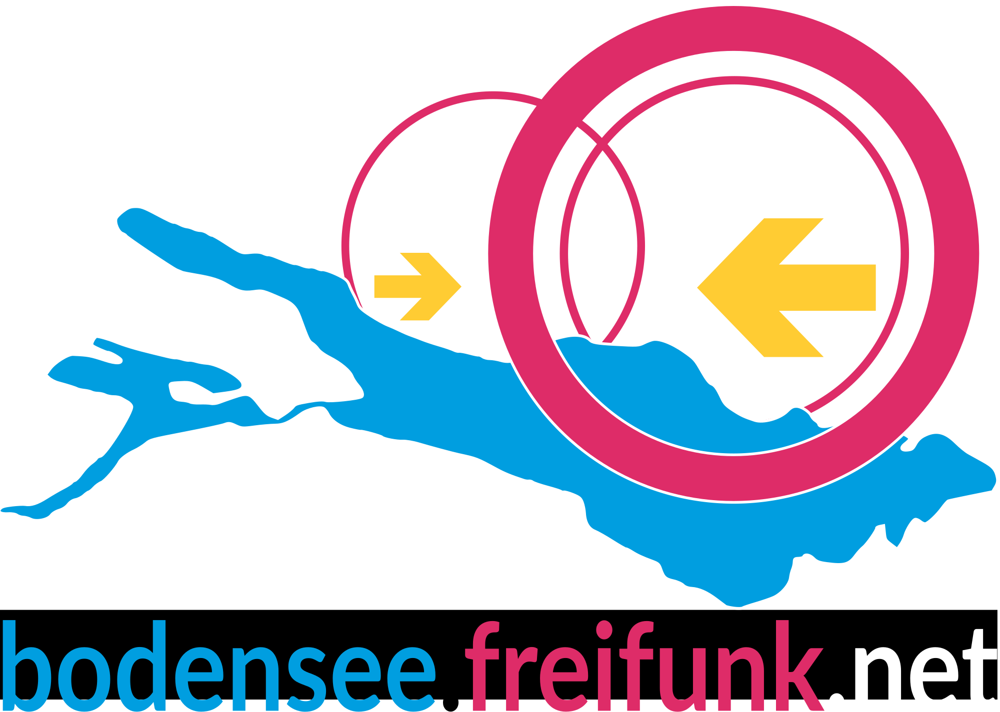
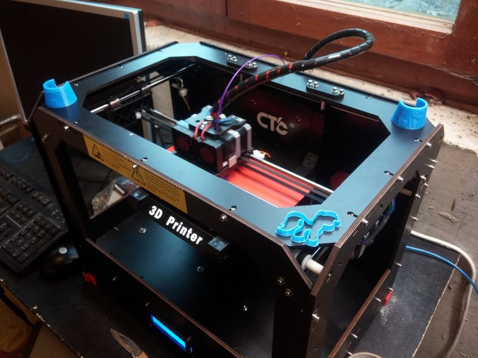
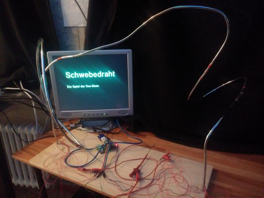

Unsere Projekte:
Freifunk Bodensee

Durch einen Teil von uns ist im Januar 2016 die Freifunk Bodensee iniziative entstanden. Wir haben mitlerweile ca 150 Knoten, dass bedeutet Router die mit unserer Freifunk firmware um den Bodensee herum stehen und funken.
Für ein Halbes Jahr finden wir dass schon ein sehr Gutes ergebnis und wir sind weiter am Wachsen.
Wir sichern uns wegen der Stöhrerhaftung und abmahnindustrie folgender maßen ab:
Wir haben derzeit 5 v-server auf denen die Daten weitergeleitet werden, entweder zurück ins Frifunk Netz oder über einen VPN server nach Schweden, wo keine Störerhaftung Existiert.
3D Druck
Wir haben einen 3D Drucker!
Wie in jedem guten Hackspace, haben auch wir einen 3D Drucker. Wir haben zwar ein nicht so teures Produkt, aber 3D Drucker bleibt 3D Drucker.
Die Qualität der Drucke ist zwar nicht perfekt, dass ligt evt auch ein bisschen an dem Drucker doch das meiste ist einstellungssache.
Wir haben bis jetzt schon viele fillygons von dem ccczh gedruckt, so wie ein freifunk bodensee logo und sehr viele objektre von thingiverse wie Mateclipper oä.
Derzeit Arbeiten wir noch daran Bunt zu drucken, da unser drucker 2 düsen hat besteht dazu die Möglichkeit, wir müssen nurnoch genug mit den Einstellungen herum Spielen.
Schwebedraht
Wir Basteln seit einer weile an einem Spiel, dem Schwebedraht herum.
Der Schwebedraht ist ein, auch als Magischer-draht bekanntes, Spiel. Man muss mit einer Schlaufe die um den Draht gewickelt ist versuchen, den Draht nicht zu berühren, wärend man die Schlaufe von Anfang bis zum ende des Drahtes zieht. Das Ziel ist den Draht möglichst selten zu berühren.
Uns war es zu langweilig dass nur ein Piepston ertöhnt wenn man den Draht berührt, deshalb haben wir das ganze in mehrere Sekmente aufgeteilt, in denen es auch zwischenstationen gibt. Wenn man startet muss man das erste teil berühren, nun wird ein startvideo auf dem Bildschirm gezeigt. Jetzt darf man den draht nicht berühren bis man zu einem zwischensekment kommt, wenn man das besonders schnell berührt bekommt man bonuspunkte. Das geht so weiter bis zum schluss. Solte man den Draht (nicht das zwischenstück) berühren wird ein video wie z.B. der IT-Crowd-Clown abgespielt, berührt man das zwischensekment kommt ein Bonuspunkte-Video. Die Zwischensekmente dienen zum Zeit messen, und punkte zusammen zu rechnen, die wenn man das End segment berührt angezeigt werden.
Das ganze wird über einen Raspberry Pi gesteuert und ist in der Programmiersprache Python3 Programmiert
VOC
Wir haben unser Video Operation Center!
Unser voc ist zwar klein, aber es existiert. Wir streamen größtenteils freifunk bodensee Treffen, beschäftigen uns auch so gerne mit der Video technik und unterstützen das C3VOC bei vielen events.